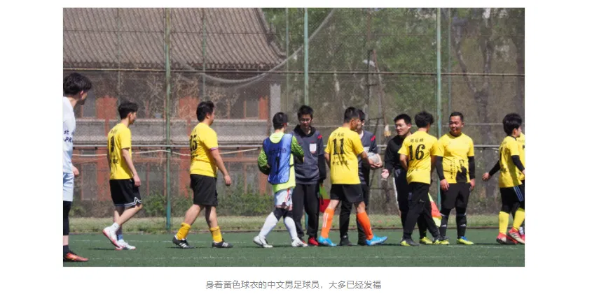
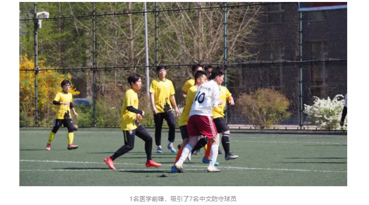
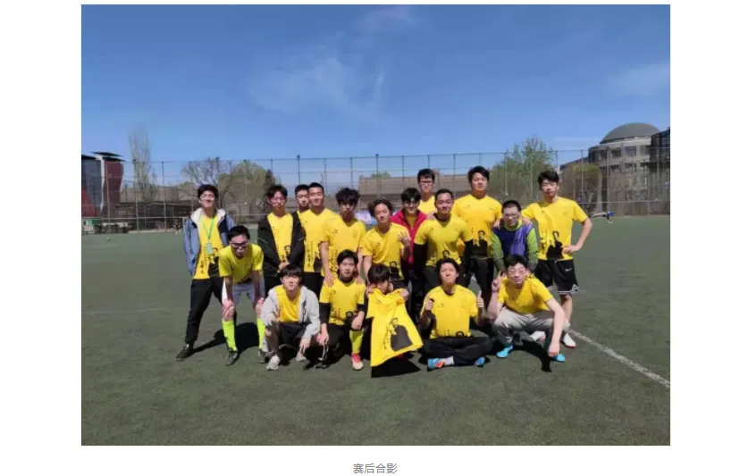

# 序
转载一些有趣的文章，侵删。
导读：2021 年，北大中文系男足再度遭遇医学男足，这次又有怎样的火花呢？
后卫打飞乌龙球，中文男足 0:14 惜败医学
迟日江山丽，春风花草香。4 月 3 日早 10 点，中文男足迎来了 2021 年北大杯的首秀。在未名湖畔的鸟语花香中，中文男足的队员们诗兴大发，迷失了自我，全场所有射门 —— 无论是面对对方大门，还是面对己方大门，全部射偏，0:14 惜败医学。
赛前，中文男足曾组织队员集体观看蒙古对阵日本的比赛，希望可以向蒙古这样的职业球队学习如何对抗实力强劲的对手。结果，蒙古以 0:14 的比分惨败日本。
观战队员纷纷表示，蒙古连中文男足都不如。因为中文男足近年来最差比分，也不过是输了 12 球。
本场战罢，队员们又纷纷表示，蒙古竟是我自己。
# 1.
2020 年 10 月，中文男足曾以 0:12 的比分憾负医学①。
① 详细战报参见 @邓香兰 的置顶微博《门将扑出 30 球，中文男足 0:12 憾负医学》
经历了这场 “有辱系格” 的失利之后，虽然队员们嬉笑如常，仿若赢球一般开心，但怀揣着复兴大梦的队长陈晔晗却笑不出来，他希望有朝一日可以带领球队一雪前耻。
俗话说，心诚则灵。雪耻的机会说来就来，中文男足果然又抽到了医学。
负责抽签的，是中文男足领队王少坤。去年的中文系新年晚会上，王少坤抽到了全场最高大奖 iPad。因此，众位队员对他的手气寄予厚望。
不出所望，王少坤又一次抽到了大奖。他为中文男足抽到的对手，分别是 2019 年新生杯冠军医学、去年杀入新生杯决赛的化学、拥有多名足球特长生的政管历史信管联队、去年 9:0 击败中文的数学。仅仅看这几个球队的名字就知道，四场屠杀在所难免。
面对这样的抽签结果，老队长余栢耀感到很欣慰。他曾经在 2018 年新生杯中文对阵光华的比赛中，面对队友邓香兰把守的大门，一传一射②，帮助光华 6:4 战胜中文，创造了单场比赛打进 1 粒乌龙球、传出 1 粒乌龙助攻的剽悍战绩。
②该场比赛，余栢耀先是助攻邓香兰打入乌龙，帮助光华 1:0 领先。随后，在中文连进两球，2:1 领先光华后，高高跃起，头球后蹭打入乌龙，吹响了光华反击的号角。
余栢耀表示，面对强大的对手，失误是很正常的，今年的对手这么强，他保持了三年的乌龙记录终于有望被打破。言语中流露出对后辈的无尽期许。
而另一位老队长、远在青海支教的邓香兰则连夜制作了赛前海报，为球队打气，希望球队不要再 0:12 憾负了。

他说，海报上有两句话，一句是对医学说的（医者仁心），还有一句也是对医学说的（我的一位教医学的先生却教给我医生的职务道：可医的应该给他医治，不可医的应该给他死得没有痛苦）。
# 2.
2018 年，中文男足曾经 0:3 小负医学。而到了 2020 年，中文男足的丢球数却连翻两番，达到了 12 球。
老将陈龙作为理科生，利用控制变量法对这一现象进行了分析：中文男足的阵容虽然变化巨大，但由于球队中的中国人都不太会踢球，水平差异不大，所以中国球员的更迭属于无关变量。
敏锐的陈龙接着发现，2018 年，中文男足阵中有 6 名韩国外援，2020 年则只有 1 位。对比分真正起影响的，正是韩国球员的数量。
得知这一惊天发现后，队长陈晔晗连夜在中文男足的微信大群中添加了所有韩国人的微信，一一询问，能否参加 2021 年的北大杯。在他的软破硬泡之下，最终有 6 名韩国外援同意参加比赛。
到了比赛前一天，6 名韩国外援中，主力边后卫韩炅吾突然要写论文，表示比赛不能到场；中场大师罗峻在微信群中发了一个拉票链接之后，便彻底失联；李硕熙和李根珉虽然可以到场，但他们从小在中国长大，没有接受韩国足球氛围的熏陶，水平与中国球员无二。因此，能够首发出战的韩国球员，只有柳熙皙和成镐民。

面对这样的残阵，中文男足排出了 5-3-2 的阵型。老将陈龙把守大门；袁睿、金梦城、龚喆、张佳良、刁天放担任后卫，负责在禁区内堵枪眼；陈晔晗、郎大状、高润东担任中场，负责在禁区外堵枪眼；韩国球员柳熙皙、成镐民则在前场吸引火力，缓解中后场球员堵枪眼的压力。
踢过边锋的邓香兰看到这套首发，嘲讽道：“之前我在的时候，中文男足还有能踢前场的本土球员，现在一个都没了。”
来自宁夏的领队王少坤反驳他：“这不还有我吗？”
邓香兰反问道：“你都能踢前场，不就证明中文男足没有能踢前场的本土球员了吗？”
# 3.
由于医学的控制力十分强大，中文男足的队员很难碰到球，因而在比赛开始前，陈晔晗为了让大家在赛前多踢几脚球，定了九点的集合时间。
老将陈龙质疑道：“九点未免也太早了，我看九点二十正合适。”
陈晔晗说：“我这不是为了给个提前量吗，定九点肯定九点半人才齐。” 大家纷纷称是。
果不其然，提议九点二十集合的陈龙直到九点五十才慢悠悠地到场。
陈龙刚刚换好门将手套，主裁判便吹响了比赛开始的哨声。医学球员迅速进攻，不出十秒，便杀入了中文的禁区。然而，由于医学部离北大本部较远，医学众将舟车劳顿，脚头不准，一脚射门打在了门柱上。
陈龙摸了摸门柱，说：“多亏了你啊。” 话音未落，医学前锋又一脚射门，打在了另一侧的门柱上。
陈龙正准备移动到另一侧去抚摸门柱，恰好医学前锋一脚射门打得很正，弹到了陈龙手上，被他稳稳抱在怀中。
场边的中文观众不明所以，开始大喊：“陈龙 nb！” 陈龙向观众席挥手，接着就把球开给了医学球员，对方前锋拿球之后一脚爆射，皮球又打到门柱上弹出。

在门柱的帮助下，中文男足死守了 20 分钟仍未丢球。陈龙的女朋友原本因为不想看到男朋友被暴打的模样，不准备来观战，得知这一消息后，连忙赶到球场。
# 4.
陈龙的女友刚刚来到球场，就看到皮球飞进了球网。她激动地问到：“我们进球了吗？”
由于陈龙从未在朋友圈发过与她的合影，中文的观众并不认识她。王少坤告诉她：“医学部的球迷区在那边。”
她正准备告诉王少坤自己的身份，陈晔晗拿球被断，医学又一个飞速的反击，前锋一脚射门把皮球送进了网窝。她高喊：“又进了诶！”
王少坤有点生气地说：“这位同学，请你去医学部的球迷区观战。”
她定睛一看，才发现被进球的是自己的男朋友。她连忙来到球门边，准备安慰陈龙。陈龙看到她，笑着挥手致意，随即感到脑后一股凉意，再回头之时，皮球已经如一阵风般飞进了球门。
五分钟之内，医学部又连进两球。半场结束，中文男足 0:5 落后。
中场休息之时，中文男足球员三三两两背手交谈，有说有笑。经历了去年 0:12 医学那场战斗的郎大状表示，按照这个趋势发展，这场比赛只用输 10 个，相比去年是巨大的进步。
而身经百战的老将陈龙深知，中文男足的大崩盘，往往出现在下半场。他看着信心满满的年轻人们，默默地和女朋友说：“你走罢，下半场不要再看了。”
# 5.
听闻中文男足有望只输医学 10 球，中文系 19 级知名艺术家吕笑彦赶来观战。他来到场边之时，下半场比赛刚刚开始，王少坤便邀请他为场上局势创作一幅绘画。
吕笑彦沉思片刻，一分钟内便挥笔而就。
王少坤问：“你画的这是什么？”
吕笑彦回答：“《中文死守医学》。

“那这画上又是什么？”
“空荡荡的半场，以及医学门将。”
“可是中文在哪里？”
“中文在死守医学。”
王少坤收下吕笑彦的绘画后，连忙询问场上比分，原来已经 0:6 落后了。他连忙喊出中文男足那句流传了数十年的口号：
“压上！压上！输六个和输八个没有区别，进一个能吹一辈子！”
听闻开始压上，后卫龚喆突然兴奋，精神失常，拿球之后看到球门就是一脚爆射，皮球擦着横梁飞出了球门。他双手抱头，深感遗憾，仔细一看，发现球门前站着的并不是医学门将，而是陈龙。
余栢耀听说这一消息，十分懊恼，在微信群里大肆批判：“连乌龙球都打不进，中文男足脸都不要了。”
这脚乌龙不进让中文男足球员意识到，原来自己不仅打不进对方大门，连自己的大门也打不进。场上球员的自信心立刻土崩瓦解，连丢 8 球。
最终，中文男足 0:14 惜败医学。

# 6.
赛后，虽然比半年前多丢了 2 球，但中文男足的队员们并没有太沮丧，依然有说有笑。陈晔晗看着这群队员们，想起自己想要重振中文男足雄风的春秋大梦，不禁苦笑了一声。
他默默地点了一根烟，说道：“从那一回以后，我便觉得医学并非一件紧要事。②输再多倒也无妨了。”